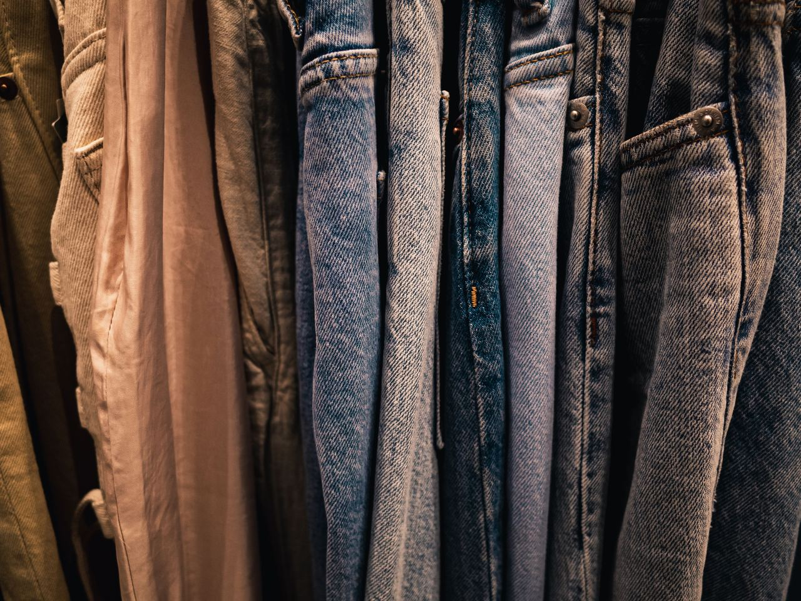

Vintage · Gamla stan
Amerikansk vintage
Handplockade Levi's, workwear och 90-talsfavoriter – mitt i Gamla stan på Köpmangatan 22.
Besök butiken★ 4,7 av 5 · 45+ omdömen på Google
I butiken
Levi's 501
Klassiska jeans i många modeller.
Workwear
Carhartt och slitstarka jackor.
Outdoor
Woolrich och flanell.
Prep
Ralph Lauren och 90-talsklassiker.
Nya plagg kommer in löpande – följ @studio95vintage.

Handplockat, plagg för plagg
Studio 95 drivs av ett par med passion för amerikansk vintage. Varje plagg är utvalt för kvalitet och karaktär – från klassiska 501:or till robust workwear.
4,7i betyg på Google – kunderna nämner urvalet och den personliga servicen.
Öppettider
| Måndag – fredag | 11:00 – 18:00 |
| Lördag | 11:00 – 16:00 |
| Söndag | 12:00 – 16:00 |
Köpmangatan 22, 111 31 Stockholm
Gamla stan · nära Stortorget
08-653 49 49
studio95vintage@gmail.com
@studio95vintage